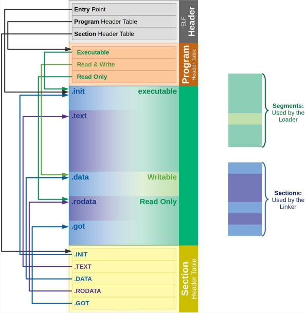

Introducción
Durante esta primer parte vamos a trabajar con la arquitectura Intel 64
Recuerden siempre tener a mano los manuales de Intel
- El volumen 1 describe la arquitectura básica
- El volumen 2 es la referencia del conjunto de instrucciones, que también pueden consultar en felixcloutier. Este es el que más les va a servir en las próximas clases.
- El volumen 3 es la guía de system programming, la vamos a usar en la segunda parte de la materia.
Contamos con el siguiente esquema de registros:

Recuerden que las versiones de distintos tamaños de un mismo registro (por ejemplo: RAX, EAX, AX, AH, AL) conviven en el mismo circuito físico, es decir, EAX referencia a los 32 bits menos significativos del registro RAX, no se puede modificar el contenido del primero sin alterar el del segundo.
Programación en Assembly x86
Vamos a empezar a trabajar con lenguaje ensamblador, observen el siguiente código que corresponde al típico "Hola Mundo", vamos a ver su estructura general:
%define SYS_WRITE 1 ;;
%define SYS_EXIT 60 ;; Directivas de preprocesador
%define STDOUT 1 ;;
section .data ;;--> Directiva de ensamblador ;;
msg db '¡Hola Mundo!', 10 ;;--> Pseudo-instrucciones ;; Sección .data
len EQU $ - msg ;; ;;
global _start ;;--> Directivas de ensamblador
section .text ;; ;;
_start: ;;
mov rax, SYS_WRITE ;;
mov RDI, STDOUT ;;
mov rsi, msg ;;
mov rdx, len ;; Sección .text
syscall ;;
;;
mov rax, SYS_EXIT ;;
mov rdi, 0 ;;
syscall ;;
La idea no es que comprendan lo que hace este código, sino que puedan identificar las partes que lo componen:
-
Directivas del preprocesador: estas son instrucciones que va a aplicar el preprocesador antes de pasarle el texto al ensamblador, en este caso se están definiendo etiquetas o renombres con ciertos valores. El preprocesador va a tomar estas definiciones y va a reemplazar todas las apariciones de las etiquetas en el resto del texto por sus valores. Por ejemplo, todas las apariciones de
SYS_WRITEserán reemplazadas por1. -
Directivas de ensamblador: estas son instrucciones que le indican al ensamblador cómo interpretar las siguientes líneas de texto y así armar el binario. Por ejemplo,
globales una directiva que indica que el siguiente símbolo, en este caso_start,debe poder ser identificado por fuera de este archivo, es decir, una vez ensamblado se debe poder hacer referencia a_startdesde otra pieza de código, y un linker debe poder establecer esa conexión. -
Pseudo-instrucciones: estas son instrucciones que atenderá el ensamblador y no quedarán en el binario resultante que ejecutaría un procesador.
En este caso
msg db '¡Hola Mundo!', 10define que debe haber un espacio de memoria identificado con la etiquetamsg, definido de a bytes (db = define bytes), con los siguientes valores'¡Hola Mundo!', 10. Luego, toda aparición demsgen el código será reemplazada por el puntero al comienzo de esa tira de bytes. (el byte 10 se correspone a un salto de línea)El caso de
len EQU $ - msges similar pero no se almacena nada en memoria, se calcula el valor declarado después de la palabra EQU al momento de ensamblar, y se reemplazan las apariciones delenpor el valor resultante.$hace referencia a la posición de memoria en la que se está actualmente, luego, al restarlemsg, obtenemos la cantidad de posiciones de memoria (bytes) que hay entre len y msg. Es decir, cada aparición delense reemplaza por la longitud de lo declarado enmsg(en este caso, 13). -
Sección .data: sección dedicada a definir los datos del programa.
-
Sección .text: sección dedicada a definir el código del programa.
Instrucciones
Tenemos muchas instrucciones disponibles, cuya sintaxis suele seguir una lógica común:
- Instruciones sin operandos (o con operandos implícitos). Ej:
retpara retornar a la función llamadora. - Instrucciones con un operando: puede ser un registro, una posición de memoria, un inmediato. Ej:
jmp .finsalta a la etiqueta.fin,call foollama a la función foo. - Instrucciones con dos operandos: por lo general el primer operando es el destino (dst), donde se almacenará el resultado de ejecutar la instrucción, y el segundo operando es la fuente (src).
- Hay que tener en cuenta que para muchas instrucciones el operando destino también es fuente.
- Los pares dst-src pueden ser registro-memoria, registro-registro, memoria-registro, registro-inmediato y memoria-inmediato. Nótese como no es posible un par memoria-memoria, las lecturas siempre deben acabar en un registro y las escrituras siempre deben partir de uno o bien de un valor inmediato.
- Los inmediatos pueden ser:
- Decimales: 200
- Hexadecimales
- con el prefijo
0x: 0xC8 - con el prefijo
0h: 0hC8
- con el prefijo
- Octales, con el prefijo
0q: 0q310 - Binarios:
- con el sufijo
b: 11001000b - con el prefijo
0b, que permite guiones: 0b1100_1000
- con el sufijo
- Al trabajar con lecturas y escrituras de memoria hay que tener en cuenta el tamaño del dato que se está leyendo/escribiendo, de lo contrario acabaremos leyendo/escribiendo direcciones de memoria que no corresponden. Para especificar el tamaño de la lectura/escritura, es preciso utilizar el tamaño de registro correcto y añadir el tamaño (BYTE, WORD, DWORD) en el operando de memoria.
- Ejemplos:
- Registro-Registro:
add rdi, rsi
- Memoria-Regitro:
mov [LABEL], raxsub r10, [rdx + 4*rax + OFFSET](Direccionamiento visto en la teórica: [Base + Indice * Escala + Desplazamiento])- mov ecx, DWORD [rbp - 8]
- add BYTE [rdi], sil
- Registro-Inmediato:
sub rsp, 8
- Registro-Registro:
Documentación de instrucciones
Tenemos muchas instrucciones disponibles, no vamos a usar todas, pero sí tenemos que ser capaces de navegar la documentación para encontrar la que necesitamos. El volumen 2 del manual de Intel es la referencia del conjunto de instrucciones (disponible en el campus, o en google...), que también pueden consultar en felixcloutier.
¿Con qué se come? Supongamos que tenemos que buscar una instrucción para sumar dos enteros de 64 bits que están en los registros RDI y RAX. Como no conocemos esta instrucción, empezamos consultando el indice del manual donde se encuentran las operaciones con una breve descripción. Vemos que está la operación ADD, en la sección 3-32.
Vamos a la sección 3-32. Nos encontramos con una tabla y varias secciones:
-
Description: Una descripción detallada en palabras del comportamiento de la instrucción
-
Operation: Presenta un pseudocódigo que describe el compotamiento de la función
Parece que es lo que buscamos, pero tenemos que asegurarnos de que ambos registros puedan ser de 64 bits. Veamos la tabla:
¿Qué columnas nos interesan?
- Instruction: describe la sintaxis de uso de la instrucción. Donde vemos
rX, significa que el operando puede ser un registro tamaño X bits,immXrefiere a un valor inmediato de X bits ymXrefiere a que puede ser una dirección de memoria (desreferenciada con corchetes) de tamaño X bits. Más información en la sección 3.1.1.3 "Instruction Column in the Opcode Summary Table". - 64-bit Mode: refiere a si es una instrucción válida en una arquitectura de 64 bits, nos interesa que diga "Valid".
- Description: una descripción de la instrucción, específica a su uso con esa combinación de operandos.
Siguiendo con el ejemplo, nos interesa sumar el valor de dos registros de 64 bits, es decir, tendríamos dos r64 (o un r64 y un r/m64). Volvamos a la tabla para ver si ADD permite esta operación.
Encontramos que las únicas combinaciones de operandos que incluyen registros de 64 bits (r64 y r/m64) son estas dos:
Efectivamente, la instrucción nos sirve. La razón por la que aparece en dos filas distintas es porque si dijese ADD r/m64, r/m64 estaría contemplando el caso en que ambos operandos son direcciones de memoria a la vez, pero esto en general no está permitido.
Pseudo-instrucciones
Cuando queremos definir datos a mano desde assembler, vamos a necesitar usar pseudo-instrucciones, acá van algunas:
db 0x55 ; define sólo un byte, 0x55
db 0x55,0x56,0x57 ; 3 bytes sucesivos
db 'a',0x55 ; 0x97, 0x55
db 'hello',13,10,'$' ; strings como cadenas de bytes, cada caracter es un byte
db `hola\nmundo\n\0` ; strings con "C-style \-escapes"
dw 0x1234 ; define una word, los bytes quedan: 0x34 0x12 (por little-endianness se guarda primero el byte menos significativo)
dd 0x12345678 ; define una double word, los bytes quedan: 0x78 0x56 0x34 0x12
dq 0x123456789abcdef0 ; define una quad word,constante de 8 bytes
times 4 db 'ja' ; define 4 veces la tira de bytes 'ja', quedando "jajajaja"
Recuerden que para acceder a los valores declarados podemos incluir un nombre de etiqueta antes de la directiva de declaración (risa times 4 db 'ja').
Herramientas
Para ensamblar vamos a usar NASM. Está diseñado para varios sistemas operativos y distintas versiones de ANSI-C, por eso tiene varios formatos de salida. Como trabajaremos con Linux, vamos a utilizar elfx32, elf32 y elf64, que generan formatos de salida ELF32 y ELF64 (Executable and Linkable Format) en los archivos objeto.

En la sección Material de cursada del campus virtual van a encontrar links para instalar todas las herramientas que vamos a usar durante el cuatrimestre. Si están trabajando en las compus de los labos ya deberían tener todo instalado.
Ejercicio
Vamos a probar que todo ande como corresponde.
Creen un archivo que contenga el código del programa HolaMundo que vimos antes. El archivo puede tener el nombre que prefieran, acá lo mencionaremos como HolaMundo.asm.
Para ensamblarlo podemos correr la siguiente línea en la terminal de comandos (estando en la misma carpeta que el código):
$ nasm -f elf64 -g -F DWARF HolaMundo.asm
Si se fijan en el directorio se les habrá creado un archivo HolaMundo.o, un binario como lo que vimos que GCC genera la clase pasada.
Luego lo linkeamos con:
$ ld -o HolaMundo HolaMundo.o
Y finalmente lo ejecutamos con:
$ ./HolaMundo
De funcionar todo correctamente, los comandos de compilación no deben imprimir ninguna salida, y ejecutar el binario ./HolaMundo debe imprimir ¡Hola Mundo! en la terminal.
Podríamos crear un makefile para compilar el programa automáticamente ejecutando solo make en la terminal.
Dicho Makefile luciría similar a esto:
AS := nasm
ASFLAGS := -f elf64 -F DWARF -g -Wall
LD := ld
LDFLAGS := -g
TARGET := HolaMundo
.PHONY: all clean
all: $(TARGET)
# assembly
HolaMundo.o: HolaMundo.asm
$(AS) $(ASFLAGS) $<
# linking
$(TARGET): HolaMundo.o
$(LD) $(LDFLAGS) $< -o $@
clean:
rm -rf *.o $(TARGET)